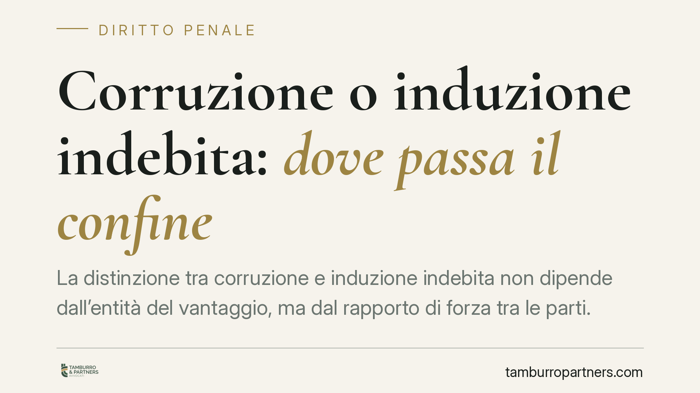

Corruzione o induzione indebita: dove passa il confine
La distinzione tra corruzione e induzione indebita non dipende dall'entità del vantaggio, ma dal rapporto di forza tra le parti. Una recente pronuncia della Corte di Cassazione torna sul punto e chiarisce anche un profilo processuale rilevante: l'inutilizzabilità di un'intercettazione non travolge la condanna se il residuo probatorio regge autonomamente. Due principi con ricadute pratiche concrete per imputati e difensori.

Il caso
Al centro della vicenda una contestazione che oscillava tra due qualificazioni giuridiche distinte: corruzione da un lato, induzione indebita a dare o promettere utilità dall'altro. In gioco somme modeste e un'ospitalità conviviale tra soggetti in posizione paritaria. La Corte di Cassazione ha ribadito che il discrimine non sta nell'importo né nella semplice dazione, ma nella dinamica relazionale tra pubblico agente e privato.
Inquadramento normativo
Occorre anzitutto fare chiarezza sulle norme coinvolte, spesso confuse.
Le fattispecie di corruzione sono previste dall'art. 318 c.p. (corruzione per l'esercizio della funzione) e dall'art. 319 c.p. (corruzione per atto contrario ai doveri d'ufficio). L'art. 321 c.p. non definisce la corruzione: si limita a estendere al privato corruttore le pene previste per il pubblico ufficiale. È un errore ricorrente presentarlo come la norma istitutiva del reato.
L'induzione indebita a dare o promettere utilità è invece disciplinata dall'art. 319-quater c.p., introdotto dalla legge n. 190/2012. La figura si colloca in una zona intermedia tra corruzione e concussione: il pubblico ufficiale o l'incaricato di pubblico servizio, abusando della qualità o dei poteri, *induce* il privato a dare o promettere denaro o altra utilità.
Il criterio distintivo: il rapporto di forza
Il punto decisivo è la posizione delle parti.
Nella corruzione vi è un accordo tra soggetti sostanzialmente paritari: entrambi perseguono un vantaggio e il privato agisce liberamente, in logica di scambio. Non vi è prevaricazione.
Nell'induzione indebita il privato subisce una pressione derivante dall'abuso della qualità o dei poteri pubblici. Non è costretto come nella concussione, ma è spinto a cedere da una condizione di soggezione psicologica, pur conservando un residuo margine di scelta orientato anche a un proprio tornaconto. Proprio per questa parziale corresponsabilità, l'art. 319-quater, comma 2, c.p. punisce anche il privato indotto, ma con pena sensibilmente inferiore rispetto al pubblico agente.
Quando i protagonisti si muovono "tra pari", senza prevaricazione, la fattispecie tende a qualificarsi come corruzione. Dove emerge l'abuso e la soggezione, si apre lo spazio dell'induzione. L'indagine, dunque, è sostanziale e non meramente quantitativa.
Il profilo processuale: la prova di resistenza
La pronuncia affronta anche l'effetto dell'inutilizzabilità di un'intercettazione sulla tenuta della condanna.
La regola generale è nell'art. 191 c.p.p.: le prove acquisite in violazione dei divieti di legge non possono essere utilizzate. Ma l'inutilizzabilità di un singolo elemento non comporta automaticamente l'annullamento della sentenza.
Qui opera la cosiddetta prova di resistenza: il giudice compie un giudizio *controfattuale*, cioè verifica se, espunta mentalmente la prova inutilizzabile, il restante materiale probatorio sia comunque idoneo a fondare la condanna. Se il residuo è autonomo e convergente - ossia regge da solo e punta nella stessa direzione - la decisione resta valida. In caso contrario, il vizio diventa decisivo.
Implicazioni pratiche
Per chi è coinvolto in un procedimento di questo tipo, la qualificazione giuridica non è un dettaglio formale: incide sulla pena, sulla posizione del privato e sulle strategie difensive.
Contestare la qualificazione corruttiva proponendo quella di induzione indebita può avere effetti sostanziali sul trattamento sanzionatorio del privato. Allo stesso tempo, la verifica dell'autonomia del quadro probatorio diventa centrale quando si eccepisce l'inutilizzabilità di un'intercettazione: non basta dimostrare il vizio, occorre provarne la decisività.
Cosa fare in concreto
- Ricostruisci il rapporto di forza tra le parti: documenta ogni elemento che indichi parità o, al contrario, abuso della qualità pubblica.
- Analizza la qualificazione giuridica contestata: verifica se ricorrano i presupposti dell'art. 319-quater c.p. anziché della corruzione.
- Verifica la decisività di eventuali intercettazioni inutilizzabili: isola il residuo probatorio e valutane autonomia e convergenza.
- Conserva ogni comunicazione rilevante, senza alterazioni, utile a ricostruire il contesto.
- È opportuno valutare tempestivamente l'assistenza difensiva, data la complessità della distinzione tra le fattispecie.
Disclaimer
Contributo informativo a cura di Tamburro & Partners - Avv. Giuseppe Tamburro. Non costituisce parere legale.
Ogni condominio ha una storia a sé.
Se gestisci un'amministrazione e vuoi un confronto su una specifica questione condominiale, scrivi allo studio. Ti rispondiamo entro un giorno lavorativo.